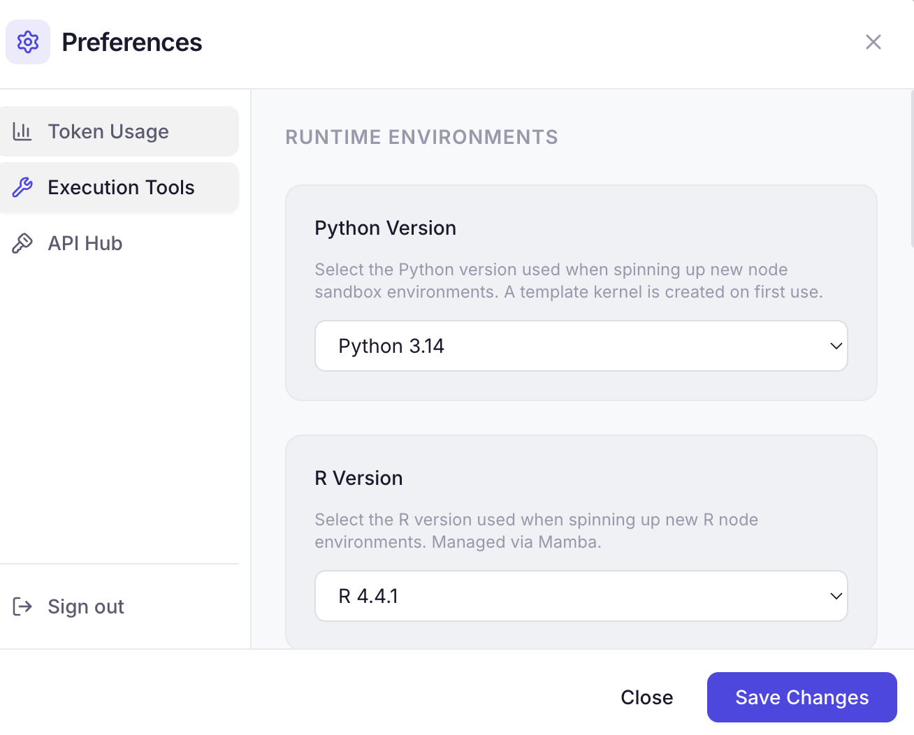
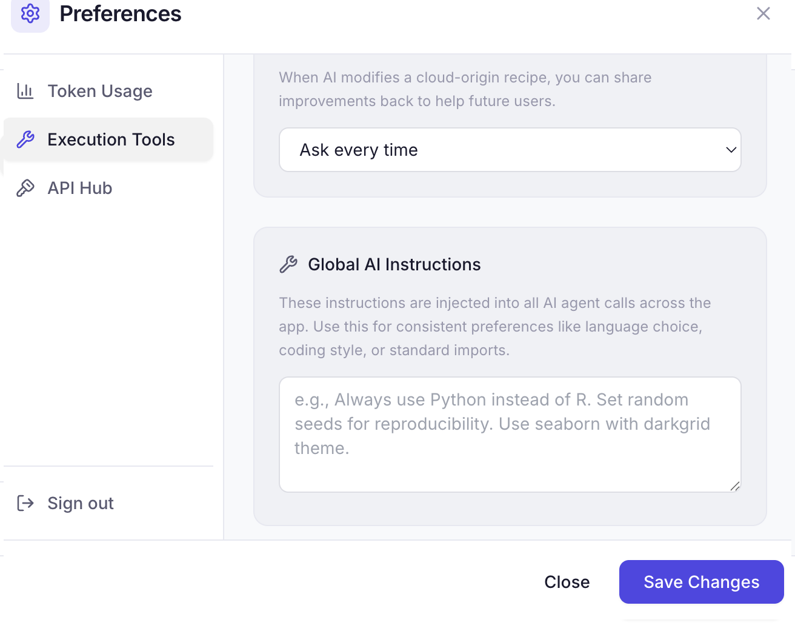

Settings
Click ⚙️ Settings at the bottom of the sidebar to open Preferences. The window contains four tabs: Token Usage, Walkthroughs, Execution Tools, and API Hub.
Token Usage
View your account status, credit balance, and quota consumption:
- Account Tier: Displays whether you are on a Free or Academic (🎓) account.
- Compute Credits: Shows your remaining cloud credit balance.
- Daily Quota: Displays token usage today against your daily limit (resets at midnight UTC).
- Monthly Quota: Displays token usage this month against your monthly limit.
- Historical Total: Shows all-time token consumption.
Credit Estimates
With 10,000 credits, you can run approximately:
- Light Tasks: ~25 million input tokens (over 1,500 dense PDF papers).
- Medium Tasks: ~6.6 million tokens of complex coding or multi-step reasoning.
For additional compute credits or lab licensing, contact hello@rolv.io.
Walkthroughs
Manage built-in interactive product tours:
- Enable Guided Tours: Turn onboarding hints on or off.
- Welcome & Chat Tour / Graph Builder Tour: Replay either guided tour at any time.
- Reset All Tours: Clear tour history so tours start again on your next visit.
Execution Tools
Configure Python/R runtimes, Mamba, remote compute targets, sharing, and AI instructions.

Python Version
Select the default Python version (3.10–3.14) for new compute sandboxes when a project does not set its own override. rolv creates a template kernel on first use.
R Version
Select the default R version (4.2.3–4.6.1, default 4.4.1) managed via Mamba. After changing the R version, start a new session or remove old ~/.rolv/envs/_template_r* caches so new environments use the selected version.
Mamba Path
If mamba or micromamba is not on your system PATH, enter the full path to the executable. Leave this field empty for automatic detection.
Remote Compute
Add SSH targets to run compute nodes on remote servers. Your account includes a remote compute slot cap (Free: 1, Academic: 3).
To add an SSH target:
- Click Add Target (disabled when your slot cap is full).
- Select SSH and enter Name, Host, Port, and Username.
- Choose Key Pair (provide private key path, such as
~/.ssh/id_rsa) or Password (entered when connecting). - Set the remote work directory and remote Python command.
- Click Test to verify the connection, then click Save Changes.
Saved SSH targets appear in each compute node's Execution Target menu in Graph View.

Recipe Sharing
Control whether rolv shares fixes when AI updates a cloud-origin recipe:
- Ask every time: Show a sharing prompt after saving.
- Never ask: Do not prompt to share recipe fixes.
- Auto broadcast: Submit recipe fixes automatically.
rolv Improvement Reports
When rolv observes repeated workflow failures, environment setup errors, or loop retries (at least 5 weighted points stored locally), it can prepare an anonymized diagnostic report to help evolve the agent for more efficient token usage and fewer failed tasks.
Select how rolv handles these reports:
- Ask when threshold is reached (default): Shows a banner in Chat View (or a floating toast outside Chat View) so you can review, edit, add notes, or cancel before sending.
- Turn off (never ask): Stops collecting prompt triggers.
- Auto-send in the background: Submits redacted batch reports automatically without prompting.
File paths, email addresses, and tokens are removed automatically. Private or local recipes never include recipe names, identifiers, or code diffs.
Global AI Instructions
Enter directives appended to every AI request (for example, Always use Python instead of R or Set random seeds for reproducibility).
API Hub
Use API Hub to connect your own LLM or local embedding model.
Custom LLM Provider
Configure any OpenAI-compatible API endpoint:
- Built-in presets fill the base URL and model name for OpenAI, Groq (
https://api.groq.com/openai/v1), Ollama (http://localhost:11434/v1, no API key needed), and OpenRouter (including:freemodels). - Set Usage Mode to Never Use, Use as Fallback (used after reaching rolv quotas), or Always Use.
Embedding Model
Semantic search indexes your local recipes and node snippets:
- Cloud Default: Uses Google
text-embedding-004while signed in. If unavailable, local search falls back to text and keyword search. - Custom Model: Connect local Ollama (
embeddinggemma:300mornomic-embed-text), LM Studio, vLLM, or OpenAI endpoints so all indexing stays local.
Click Test Connection, then click Save Changes. When you change embedding modes or models, rolv re-indexes your local recipe catalog automatically.
Next: Troubleshooting →